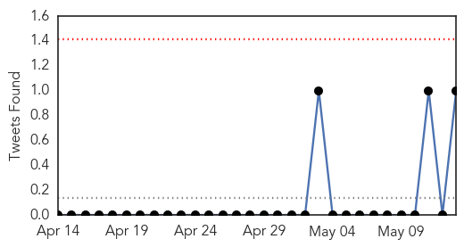
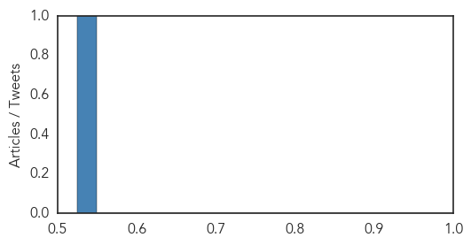
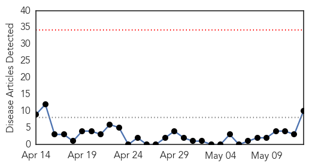

MERS
30-Day Web Trend
0 alerts, 0 warnings
30-Day Twitter Trend
0 alerts, 0 warnings

Article Locations
Article Confidences
Top Articles:
-
No articles found for May 13, 2015
Top Tweets:
- 0.801
- AFD Blog `Saudi Arabia: Two More MERS Cases' MERS-CoV http://t.co/8FEGO5Y547
Swine Flu
30-Day Web Trend
0 alerts, 0 warnings

30-Day Twitter Trend
2 alerts, 0 warnings

Article Locations

Article Confidences

Top Articles:
- 0.999
- Save the swine from shame: 10 of the most stigmatizing disease names
- 0.998
- H1N1 vaccination not must but should be considered: Experts
- 0.979
- In middle of summer, H1N1 rears its head, claims one life
- 0.953
- HC notice to Centre, UP govt on prevention measures against
- 0.927
- WHO Announces New Guidelines For Naming Human Diseases
- 0.922
- No more mad cow? WHO wants disease names to avoid offending people, animals or places
- 0.909
- Maharashtra govt takes proactive measures to prevent swine flu
- 0.731
- WHO wants to Change Guidelines for naming Diseases
- 0.633
- Selangor tops expenses on health treatments
- 0.612
- WHO Issues Strict Disease Naming Guidelines to Avoid Offence
Top Tweets:
-
No tweets found for May 13, 2015